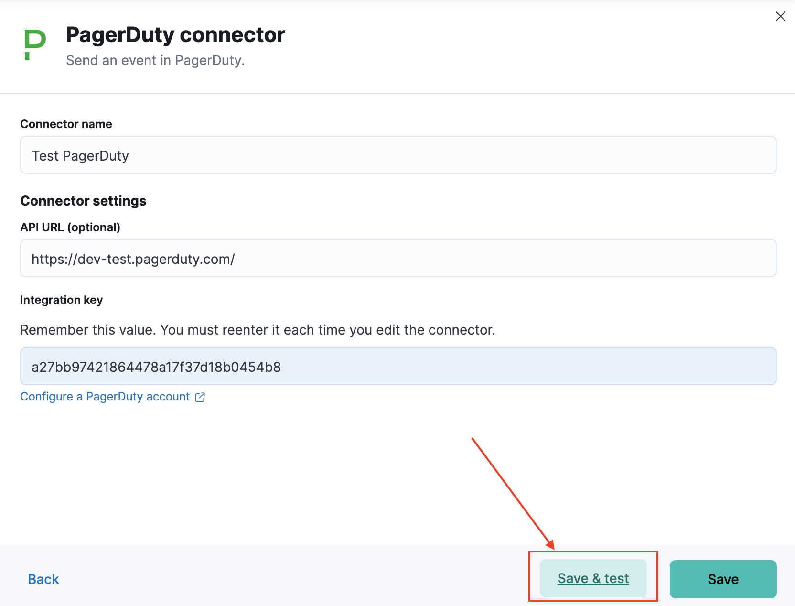
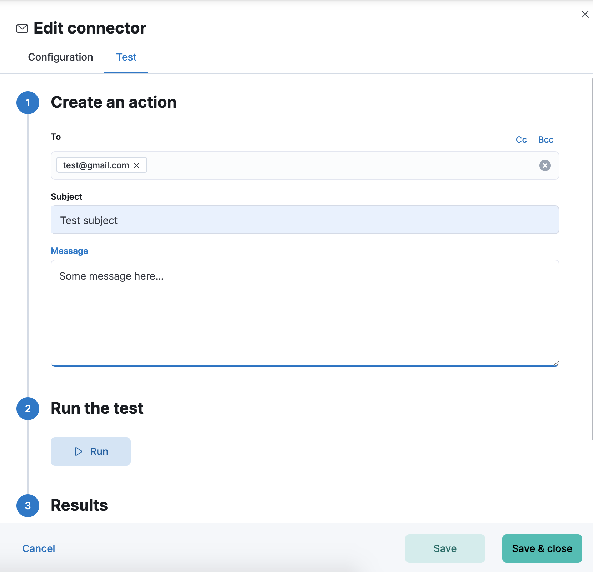
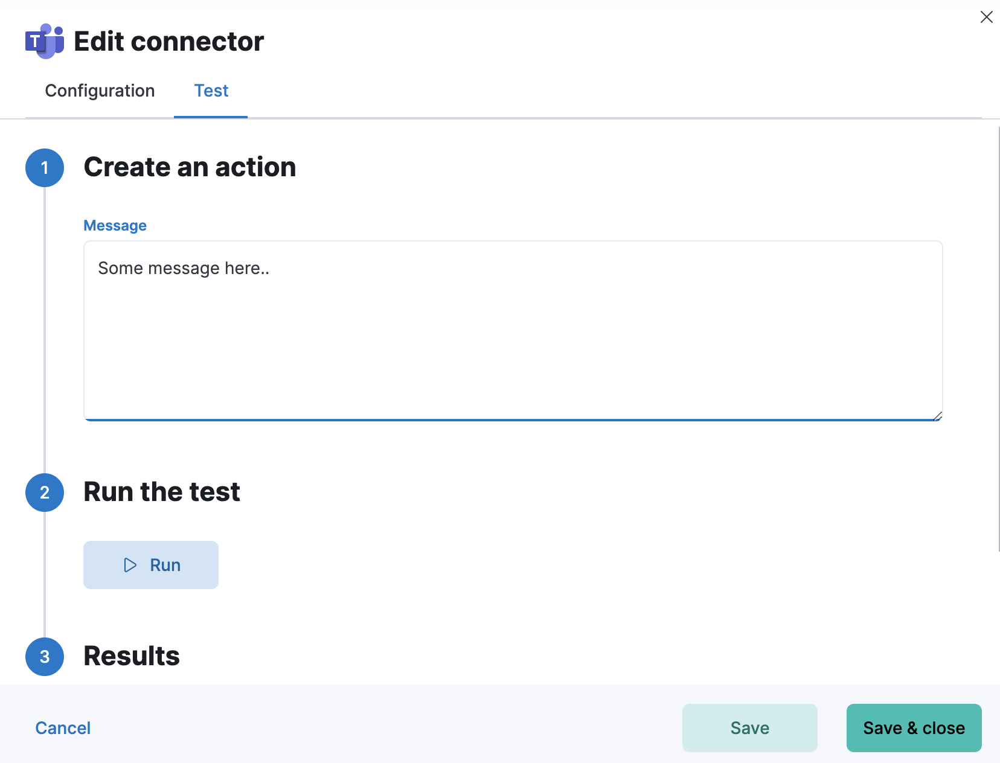

Test connectors
editIn Stack Management > Connectors, you can test a newly created connector by navigating to the Test tab of Connector Edit flyout or by clicking "Save & test" button on Create flyout:

or by directly opening the proper connector edit flyout:


[preview]
This functionality is in technical preview and may be changed or removed in a future release. Elastic will work to fix any issues, but features in technical preview are not subject to the support SLA of official GA features.
Troubleshooting connectors with the kbn-action tool
editYou can run an email action via kbn-action. In this example, it is a Cloud deployment of the Elastic Stack:
$ npm -g install pmuellr/kbn-action
$ export KBN_URLBASE=https://elastic:<password>@<cloud-host>.us-east-1.aws.found.io:9243
$ kbn-action ls
[
{
"id": "a692dc89-15b9-4a3c-9e47-9fb6872e49ce",
"actionTypeId": ".email",
"name": "gmail",
"config": {
"from": "test@gmail.com",
"host": "smtp.gmail.com",
"port": 465,
"secure": true,
"service": null
},
"isPreconfigured": false,
"isDeprecated": false,
"referencedByCount": 0
}
]
You can then run the following test:
$ kbn-action execute a692dc89-15b9-4a3c-9e47-9fb6872e49ce '{subject: "hallo", message: "hallo!", to:["test@yahoo.com"]}'
{
"status": "ok",
"data": {
"accepted": [
"test@yahoo.com"
],
"rejected": [],
"envelopeTime": 100,
"messageTime": 955,
"messageSize": 521,
"response": "250 2.0.0 OK 1593144408 r5sm8625873qtc.20 - gsmtp",
"envelope": {
"from": "test@gmail.com",
"to": [
"test@yahoo.com"
]
},
"messageId": "<cf9fec58-600f-64fb-5f66-6e55985b935d@gmail.com>"
},
"actionId": "a692dc89-15b9-4a3c-9e47-9fb6872e49ce"
}